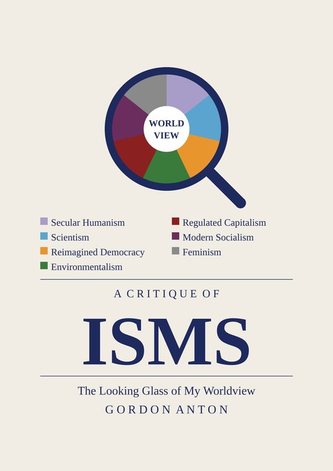
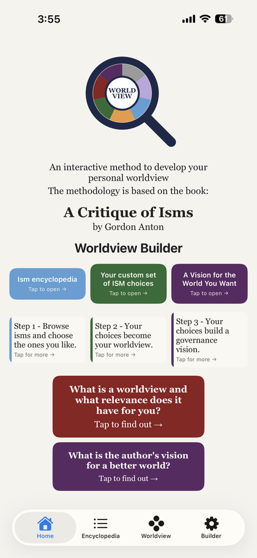
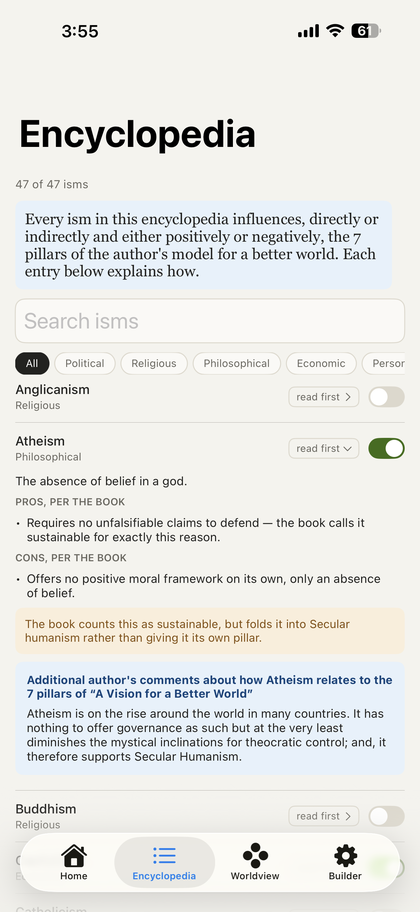
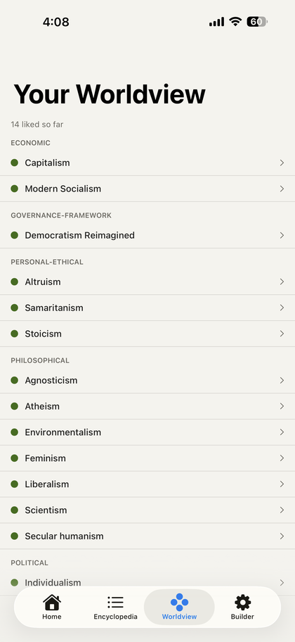
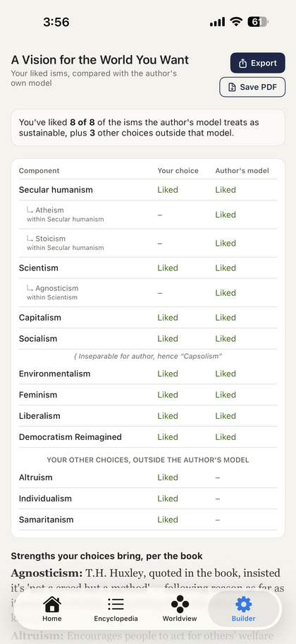

The Looking Glass of My Worldview — by Gordon Anton
“A fusion of isms that have staying power.”
Home of a published book and its companion app, “Worldview Builder” — an interactive tool that helps you compare your beliefs against the author's and build a worldview of your own.
Read the book now — app coming to the App Store
We live in an age of competing ideologies — each claiming to hold the answer, but very few standing the test of time. In this searching and clear-eyed book, Gordon Anton turns his looking glass on the great isms of our time and combines the life-affirming elements of a select few into a single progressive worldview most likely to improve the human condition.
He further argues that the forces most likely to derail our collective future are not his particular set of vetted, positive isms but the stumbling blocks of corruption and religious tribalism. He cautions against the failure of imagination and the complacency of fatalism.
Written with urgency and hard-won experience, this is a book for anyone who believes the world can be better — and is positive about man's ability to make it so.
Read the full book (PDF) ›
Read excerpts from the book ›
This is the completed manuscript, published here ahead of formal release. The final edition (with ISBN and publication date) will replace this file once available.
Worldview Builder walks you through 47 isms, lets you mark the ones you agree with, and builds a personal report comparing your choices to the author's own model from the book.
Try an early browser preview ›
Coming to the App Store


